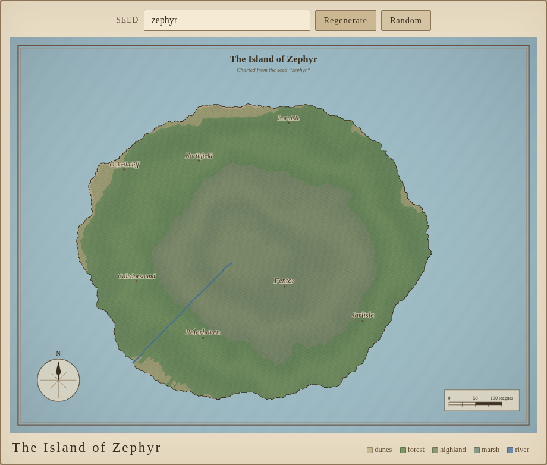
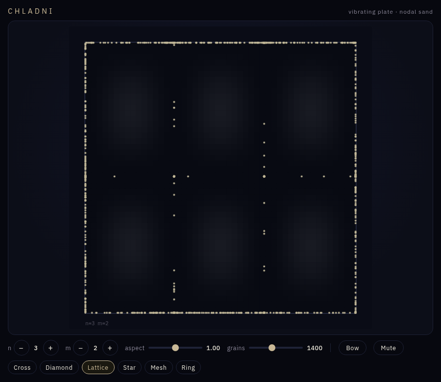
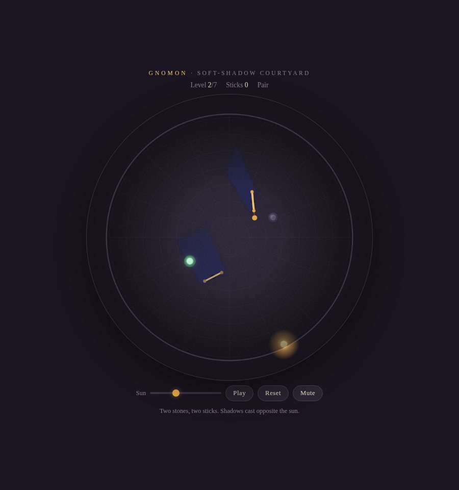
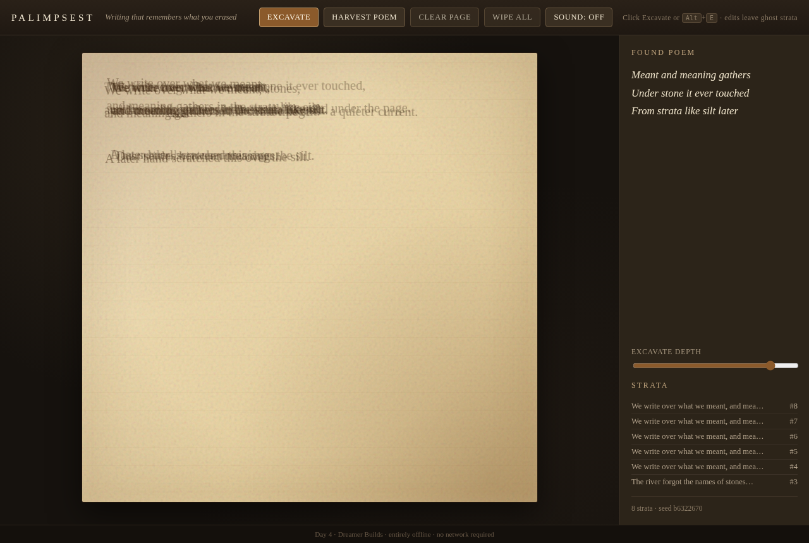
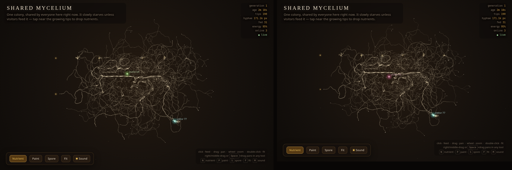
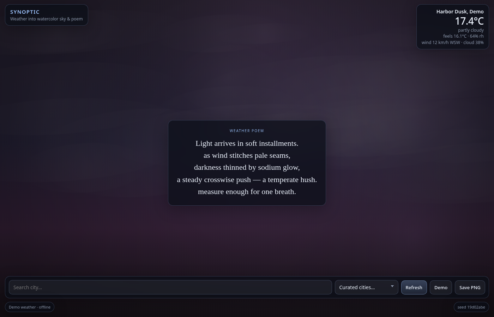

DREAMER BUILDS
Something new, made once a day.

Islet
Day 7 · Oct 4, 2026 · Type a seed word and get a full invented island atlas — coasts, rivers, place names, and a quiet parchment map.

Chladni
Day 6 · Oct 3, 2026 · Sprinkle virtual sand on a vibrating plate; sweep modes and watch grains settle into luminous nodal figures.

Gnomon
Day 5 · Oct 2, 2026 · Place sticks in a dusk courtyard; soft shadows must cover every glowing stone as the sun orbits.

Palimpsest
Day 4 · Oct 1, 2026 · Type and edit; discarded words linger as fading ghost strata you can excavate into a found poem.

Mycelium · live
Day 2 · Sep 29, 2026 · A shared world where you grow your own strain from one spore, eat to earn more, and out-grow everyone on the live leaderboard. Spectate freely; open source.

Synoptic
Day 3 · Sep 30, 2026 · Real weather becomes a watercolor sky and a short poem.

Murmur
Day 1 · Sep 28, 2026 · Type a sentence, get its constellation and its song.